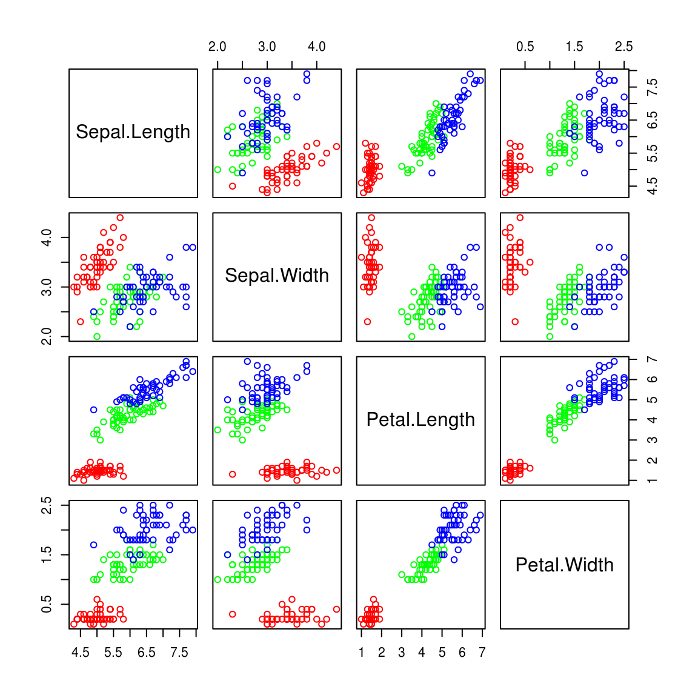

7 Correlation
度量两个变量的相关性，对于数量型数据，通常使用Pearson correlation coefficient： \[ r = \frac{\sum_{i=1}^n (x_i - \bar{x}) (y_i - \bar{y})}{\sqrt{\sum_{i=1}^n (x_i - \bar{x})^2)}\sqrt{\sum_{i=1}^n (y_i - \bar{y})^2)}}\]
相关系数r接近于1，表明强正相关，接近于-1，表明强负相关，接近于0，表明没有相关性。
7.1 协方差 (Covariance)
要理解相关系数，首先要知道什么是协方差，它被定义为： \[\sigma_{xy} = \frac{\sum(x-\mu_x)(y-\mu_y)}{N}\]
通常情况下，总体是未知的，我们手头上只有样本，相应的样本的计算公式为：
研究两个变量的关系，可以使用相关系数来度量相关性的强度，也可以用简单回归分析把相关性用直线方程表示出来。 \[s_{xy} = \frac{\sum_{i=1}^n (x_i-\bar{x})(y_i-\bar{y})}{n-1}\]
x和y的协方差取值可以是正，负和0，如果协方差是正的，x上升和y上升相关；如果协方差是负的，x上升和y下降相关。
7.2 相关性 (Correlation)
协方差的值受x和y度量单位的影响，为了得到一个无标度(scaleless)的统计量，将它除以x和y的标准误： \[ r_{xy} = \frac{s_{xy}}{s_x s_y} = \frac{\sum_{i=1}^n (x_i - \bar{x}) (y_i - \bar{y})}{\sqrt{\sum_{i=1}^n (x_i - \bar{x})^2)}\sqrt{\sum_{i=1}^n (y_i - \bar{y})^2)}}\]
于是我们得到的，就是Pearson Correlation Coefficient.
协方差和相关系数很容易计算，R提供了cov()和cor()函数分别用于计算协方差和相关系数，输入参数可以是向量，也可以是矩阵，如果是矩阵，将对每个column两两计算：
data(iris)
head(iris)## Sepal.Length Sepal.Width Petal.Length Petal.Width Species
## 1 5.1 3.5 1.4 0.2 setosa
## 2 4.9 3.0 1.4 0.2 setosa
## 3 4.7 3.2 1.3 0.2 setosa
## 4 4.6 3.1 1.5 0.2 setosa
## 5 5.0 3.6 1.4 0.2 setosa
## 6 5.4 3.9 1.7 0.4 setosawith(iris, cov(Sepal.Length, Petal.Length))## [1] 1.274315r <- with(iris, cor(Sepal.Length, Petal.Length))
print(r)## [1] 0.8717538plot(iris[,-5], col=rainbow(3)[as.numeric(iris[,5])])
cov(iris[,-5])## Sepal.Length Sepal.Width Petal.Length Petal.Width
## Sepal.Length 0.6856935 -0.0424340 1.2743154 0.5162707
## Sepal.Width -0.0424340 0.1899794 -0.3296564 -0.1216394
## Petal.Length 1.2743154 -0.3296564 3.1162779 1.2956094
## Petal.Width 0.5162707 -0.1216394 1.2956094 0.5810063cor(iris[,-5])## Sepal.Length Sepal.Width Petal.Length Petal.Width
## Sepal.Length 1.0000000 -0.1175698 0.8717538 0.8179411
## Sepal.Width -0.1175698 1.0000000 -0.4284401 -0.3661259
## Petal.Length 0.8717538 -0.4284401 1.0000000 0.9628654
## Petal.Width 0.8179411 -0.3661259 0.9628654 1.0000000采集越多的数据，肯定计算出来的相关性越接近了真实值，换一批数据，计算出来的结果肯定也会有一些细微差别。 我们要问两个问题： + r值和0的差别多大，才可以肯定相关性是真实存在的？ + 从样本计算的r值，是对总体r值的估计，能否计算出置信区间？
7.3 相关性统计检验
零假设： \[ H_{0}: pr = 0\] \[H_{a}: pr\; is\; non-zero.\] 其中pr代表population r。
这里需要用到Fisher’s z transformation： \[z_r = \frac{1}{2} \log_e(\frac{1+r}{1-r})\] 对相关系数r进行转换，转换后的值，将服从均值为 \(\frac{1}{2} \log_e(\frac{1+pr}{1-pr})\) ，标准误为 \(\frac{1}{\sqrt{n-3}}\) 的正态分布。
这里 $ H_{0}: pr = 0$ 所以均值 \(\frac{1}{2} \log_e(\frac{1+pr}{1-pr})=0\) ，那么就可以使用正态分布来计算p value。
Ztrans <- function(r) 1/2 * log((1+r)/(1-r))
zr <- Ztrans(r)
n <- nrow(iris)
zr.sd <- 1/sqrt(n-3)
## p-value:
pnorm(r, mean=0, sd=zr.sd, lower.tail=FALSE)## [1] 2.064483e-267.4 置信区间
既然转换后的 \(z_r\) 值服从正态分布，很空间可以获得 \(z_r\) 的置信区间，但是我们的目的是相关系数r的置信区间，这需要通过把 \(z_r\) 值反转回r值。
revZ <- function(z) (exp(2*z)-1)/(exp(2*z)+1)
lwzr <- zr - 1.96 * zr.sd
upzr <- zr + 1.96 * zr.sd
lwr <- revZ(lwzr)
upr <- revZ(upzr)
msg <- paste("95% confidence interval [", round(lwr,3), ", ", round(upr,3), "]", sep="")
print(msg)## [1] "95% confidence interval [0.827, 0.906]"